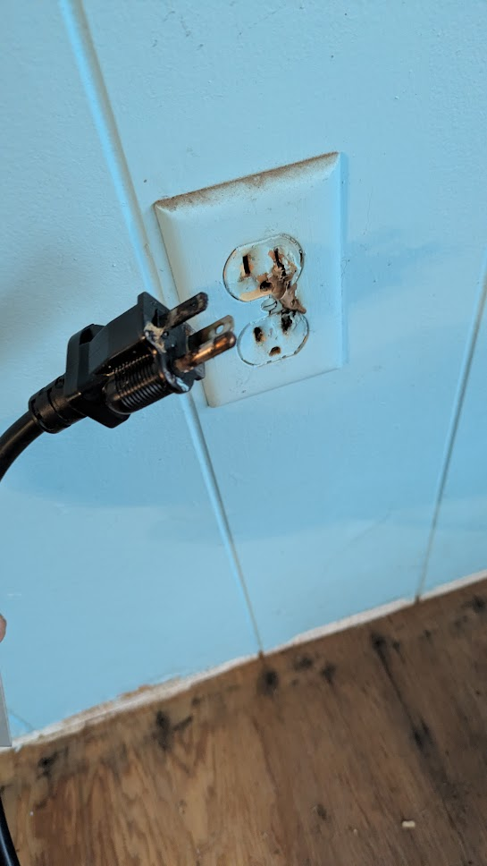
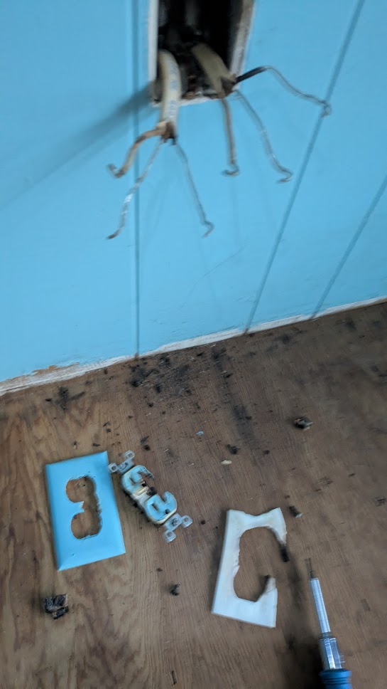
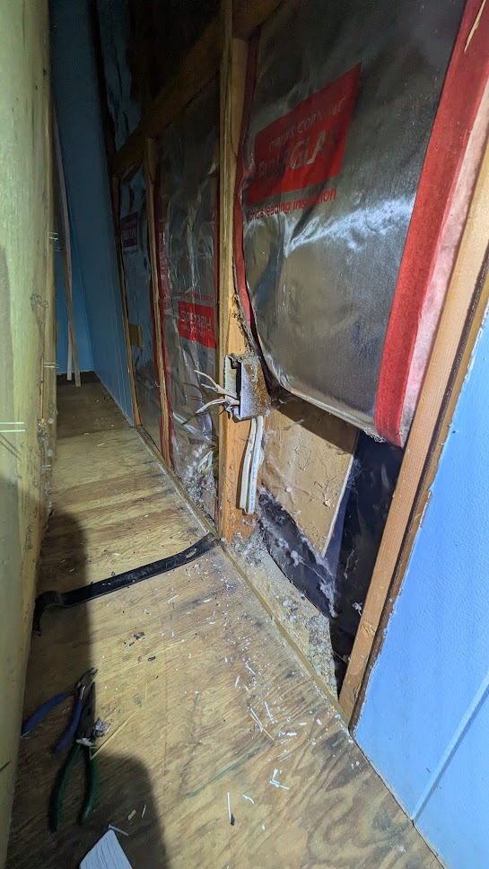
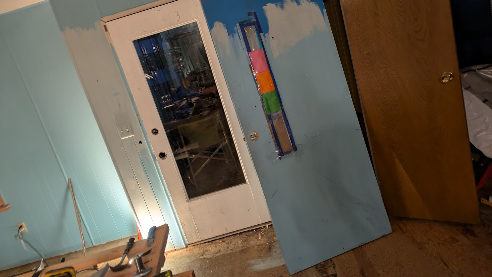

 When I returned after leaving the 1.2A fan running for 2 weeks, everything seemed fine until I unplugged the fan. Clearly this outlet had started to fail. For whatever reason, I found another outlet and plugged the fan back in after cleaning the plug terminals, and plugged a space heater into the fan, which has it's own set of outlets. After a minute or so, I noticed some popping sounds coming from the first outlet, and then noticed smoke coming from it. I rushed to cut power at the breaker panel, and none too soon.
I pulled the outlet out, still warm to the touch, to assess the damage. I was aware of the aluminum wiring, but this drove home some of the inherent risk. Apparently, oxidation resulting over time from the reaction of aluminum wire with terminals that are not compatible with aluminum introduces resistance, causing arcing. It's a feedback loop that causes more oxidation, causing more resistance, causing more arcing. The outlet that I had switched to, and started drawing significantly more current from, was chained through the already malfunctioning outlet's oxidized terminals. Thankfully, the melting of insulation around the aluminum wiring only went back a few inches, and I would be able to cut back to good wire and re-terminate to a new outlet.
 But first, somewhat freaked out by this near disaster, I had a couple of electricians come by to get their opinion on remedy, along with some aspects of the electrical system that had been identified during my buyer's inspection. I put together a standalone webpage and provided a link to it when collecting proposals for site visits. My fear was they would be adamant that I rewire the place with copper. ($$$$). I paid one smaller outfit a couple hundred dollars for a visit, and had a rep from a large outfit come by free of charge. They were both well rated online, and both of the mind that there were no major risks, provided I replaced the outlets in the house with modern ones rated CO/ARL, suitable for aluminum wire, and coat the exposed wires with antioxidant paste. They also assured me that I could do the 50 amp socket installation for my new induction range myself (the place came with no range at all).
 While I waited for delivery of replacement outlets and switches, I painted the now dry but still piss-stinky subfloor with odor-neutralizing paint, and replaced the crappy busted front door with a salvaged french door from Second Use. Then I took off for another couple of weeks, but instead of leaving anything running, I left a single piece of bait for rats (a nub of carrot), with a trail cam trained on it. I wanted to see if I'd managed to close off all the entry points for the rats. It seems I did! No visits while I was gone, whereas before I left, I had multiple visits nightly.